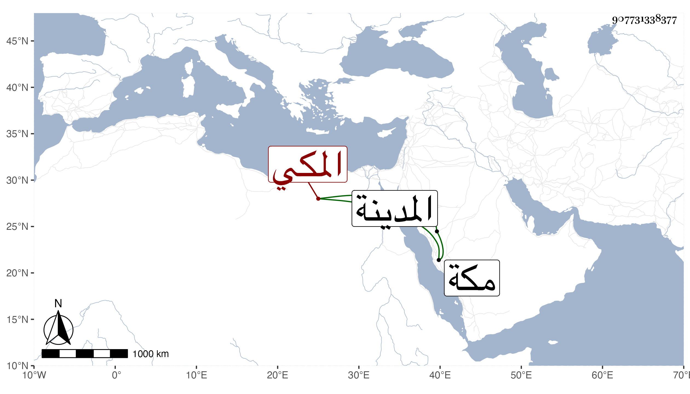

0902Sakhawi.DawLamic.ITO20230111-ara1.EIS1600.907731338377
Biography ID: 907731338377
647
محمد بن عمر بن الرضي أبي بكر بن محمد بن عبد اللطيف بن سالم الجمال أبو الفتح المكي سبط التقي بن فهد ، أمه أم ريم الماضي أبوه ويعرف بابن الرضي . ممن سمع من جده وخاليه وغيرهم ثم سمع مني بمكة وكتب عدة من تصانيفي وغيرها وصاهر ابن خالته أبا الليث بن الضياء على ابنته فاستولدها عدة مع ولد له كبير من أمة له . وهو عاقل ساكن . ولد في شهر رجب سنة تسع وخمسين وزار المدينة .
